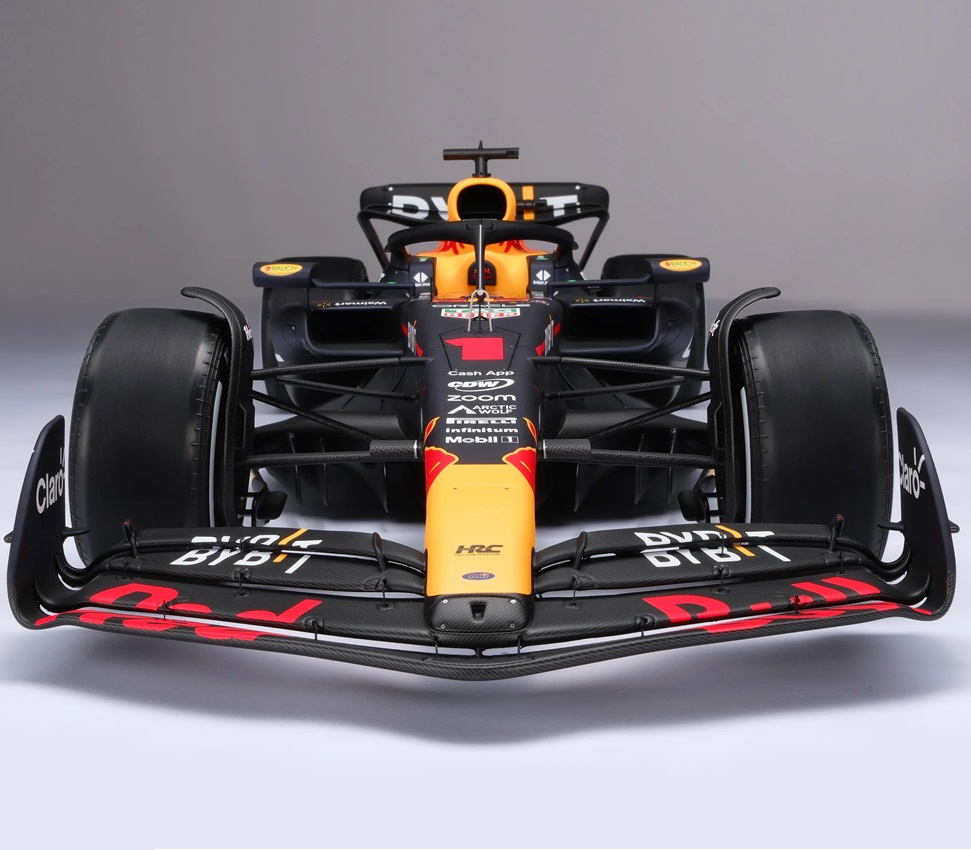

"Aqui os preços caem mais rapido que o desempenho da Ferrari"

RB 19:A rocket ship between 4 wheels
O RB19 foi o modelo de carro construído e utilizado pela equipe Oracle Red Bull Racing Honda RBPT (Red Bull PowerTrains) para a disputa do Campeonato Mundial de Fórmula 1 no ano de 2023. O carro mais dominante em termos de vitórias nos 74 anos da Fórmula 1 tinha seus problemas, porém quase sempre se superava e rumava à vitória dominante. O RB19 venceu 21 das 22 corridas de 2023, conquistou 14 pole positions de 22 qualificatórios, venceu 5 das 6 corridas Sprint que teve no ano, obteve 15 vitórias consecutivas (recorde) e conquistou 860 pontos dos 1058 possíveis. Seu piloto principal, Max Verstappen, conquistou seu terceiro campeonato mundial consecutivo, obtendo 19 vitórias (recorde), 12 pole positions, 10 vitórias consecutivas (recorde) e 21 pódios (recorde). Muitos outros recordes foram batidos em 2023. Não perca tempo e garanta sua cópia deste livro extraordinário.
Compra InternacionalR$ 359,99